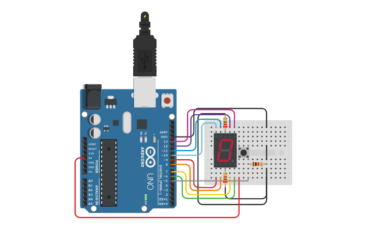

PROJECT 06: BUTTON COUNTER
State Change Detection Logic
Mission Brief
Computers need to know exactly when a button is pushed, not just if it is currently pushed. This project teaches "State Change Detection" to count exactly how many times a button has been clicked.
Key Components
- Arduino Uno R3
- Push Button (Tactile Switch)
- 10kΩ Resistor (Pull-down)
- Jumper Wires
- Breadboard
Circuit Diagram

Pin Connections
| Arduino Pin | Component Connection |
|---|---|
| Pin 2 | One leg of Push Button |
| 5V | Diagonal leg of Push Button |
| GND | 10kΩ Resistor (connected to Pin 2 leg) |
Step-by-Step Instructions
- Insert the push button into the breadboard.
- Connect one leg to 5V.
- Connect the diagonal leg to Pin 2.
- Add the 10kΩ pull-down resistor from the Pin 2 leg to GND.
- Connect the Arduino to your computer via USB.
- Upload the code and open the Serial Monitor (Ctrl+Shift+M).
Arduino Code
/* Project 6 - Button Counter
* Counts the number of times a button is pressed.
*/
const int buttonPin = 2;
int buttonPushCounter = 0; // counter for the number of button presses
int buttonState = 0; // current state of the button
int lastButtonState = 0; // previous state of the button
void setup() {
pinMode(buttonPin, INPUT);
Serial.begin(9600); // Initialize serial communication
}
void loop() {
// read the pushbutton input pin:
buttonState = digitalRead(buttonPin);
// compare the buttonState to its previous state
if (buttonState != lastButtonState) {
// if the state has changed, increment the counter
if (buttonState == HIGH) {
// if the current state is HIGH then the button went from off to on:
buttonPushCounter++;
Serial.println("on");
Serial.print("number of button pushes: ");
Serial.println(buttonPushCounter);
} else {
// if the current state is LOW then the button went from on to off:
Serial.println("off");
}
// Delay a little bit to avoid bouncing
delay(50);
}
// save the current state as the last state, for next time through the loop
lastButtonState = buttonState;
}
How It Works
- The Problem:
-
If you just use
if(digitalRead(button) == HIGH) count++, the Arduino is so fast it will count thousands of times in a split second while you hold the button. - The Solution (State Change):
-
Compare States:
We compare thebuttonState(current) withlastButtonState(previous loop). -
Edge Detection:
We only count when the state changes from LOW to HIGH. This is called the "Rising Edge." -
Debounce:
delay(50);waits for the mechanical vibrations inside the button to settle so we don't get double-counts.
Expected Output
Open the Serial Monitor. Nothing happens until you press the button. When you click it once, it says "1". Click again, "2". Holding it down does NOT increase the number.
What You Learned
- The difference between "State" (Is it Pressed?) and "State Change" (Did it just get pressed?).
- How to use variables to remember history (`lastButtonState`).
- How to increment variables using `variable++`.
Next Steps / Extension Ideas
Use the modulo operator % to reset the counter every 4 clicks. Use this logic to cycle through different LED patterns (Mode 1, Mode 2, Mode 3, Off) with a single button!